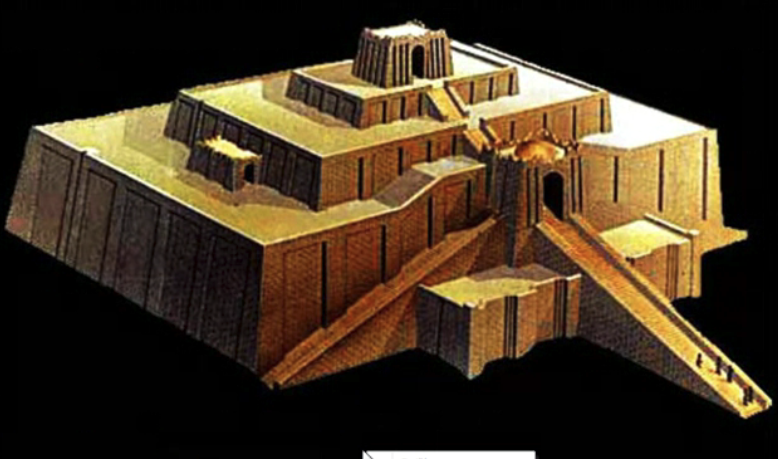
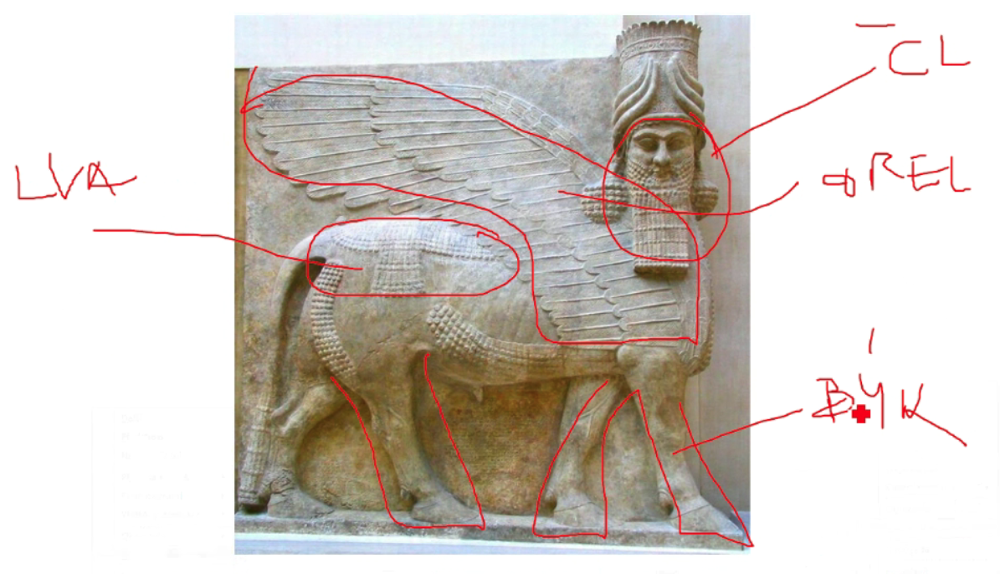
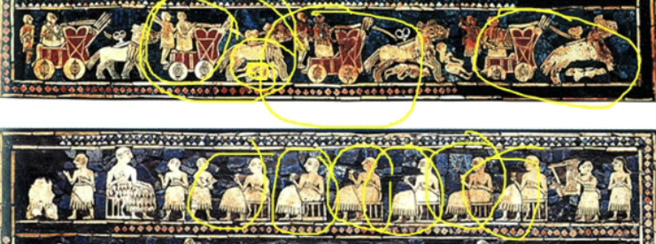

3. Umění Mezopotámie a egejské oblasti
Mezopotámie
Geografie
-
Mezopotámie → meziříčí Tygirsu a Eufratu, otevřená oblast u
hor
- území dnešního Iráku
- často “akční” oblast
- klínové písmo, rozvinutá matematika, astronomie
-
nejstarší literární památky → Epos o Gilgamešovi
- městské civilizace → Ur, Babylón
- Bůh musí mít chrám a sochu
Principy
- Bohové se zobrazovali s rohy
- Negativní představy o smrti (narozdíl od Egyptu)
- Epos o Gilgamešovi proto vypráví o nesmrtelnosti
Architektura
- Nedostatek kamene, svatby z Cihel
- Objevení klenby
- ZIKURAT
- stupňovitá stavba z cihel
-
nahoře chrám, rovná střecha určená pro sledování oblohy,
uvnitř sochy

Sochařství
- ochránci tzv. LAMASSU
-
býčí tělo a nohy, lví hříva, orlí křídla, lidská hlava

Malířství
- motiv opakování
- Pečetní válečky

Egejská oblast
Geografie
- Ostrov Kréta a Peloponéský poloostrov (jih Řecka)
- centrum - Mykény
-
Příchod řeckých kmenů které přebírají místní kulturu měli
písmo, ovšem nešlo rozluštit
- Kréta kolem roku 1400 končí z neznámých důvodů
- sošky bohyní, Labrys (objevují se i ve stř. Evropě)
Důležité pojmy
- TAUROMACHIE
-
výjev kde mladí tančí kolem býka, proskakují mezi rohy,
dělají salta z býčích zad
- nejspíše náboženský rituál
- SOŠKY BOHYNÍ (bohyně je jméno, ne postava)
-
hadi v rukou, široká zvonovitá sukně, dekolt -
obnažená ňadra, neznámá pokrývka hlavy
- LABRYS (oboustranná sekera)
Architektura
- PALÁCE
- ploché střechy
- hlavní nádvoří
-
chaotické rozmístění okolních budov (nejspíše první
motivy bludiště/labyrinty)
- členění sloupů na 3 části
- hlavice, dřík, patka
-
nově překlad z vrchu - ARCHITRÁV
proto tzv. ARCHITRÁVOVÝ SYSTÉM
- MEGARON
Malířství
- využití profilu stejné jak v Egyptě
-
rozdíl mezi Krétou a Athénami → Kréta neměly hradby,
protože věřili okolnímu moři a loďstvu (ostrov)
Obrázky
- Ištařina brána
- mluvit o barevnosti
- valená klenba
- pravá klenba
- kameny míří do středu
- Chammurapiho stéla (Kamenná deska)
- Bůh Čamaš
-
poznáme podle rohů a protože důležité postavy sedí
- ARCHITRÁVOVÝ SYSTÉM
- HRADBY
- nepravá klenba
-
kameny dávali čím dál více k sobě, pak se to osekalo
a udělali zde reliéf
- pohřbení měli masky z ryzího zlata